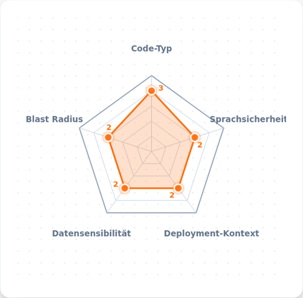
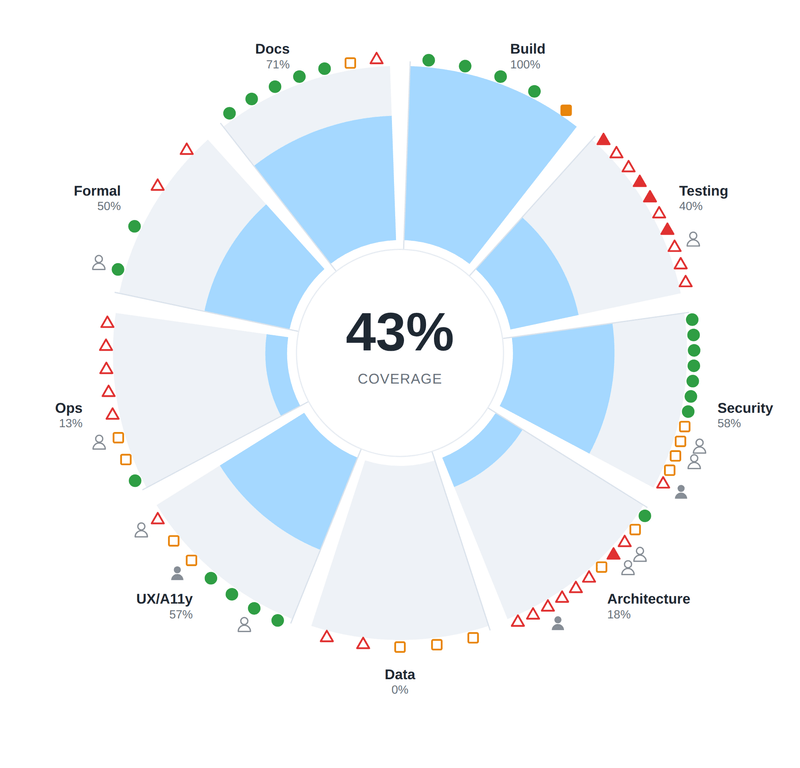

Fragen, Einwände, Ihr eigenes Projekt: Sprechen Sie den Vortrag mit Ihrer eigenen KI durch.
Fragen, Einwände, eigene Erfahrungen? Vernetzen Sie sich mit mir auf LinkedIn.
Ordnet einen Use Case nach Risikoklasse ein.

69 Fehlerkorrektur-Schichten zum Selbst-Assessment.
